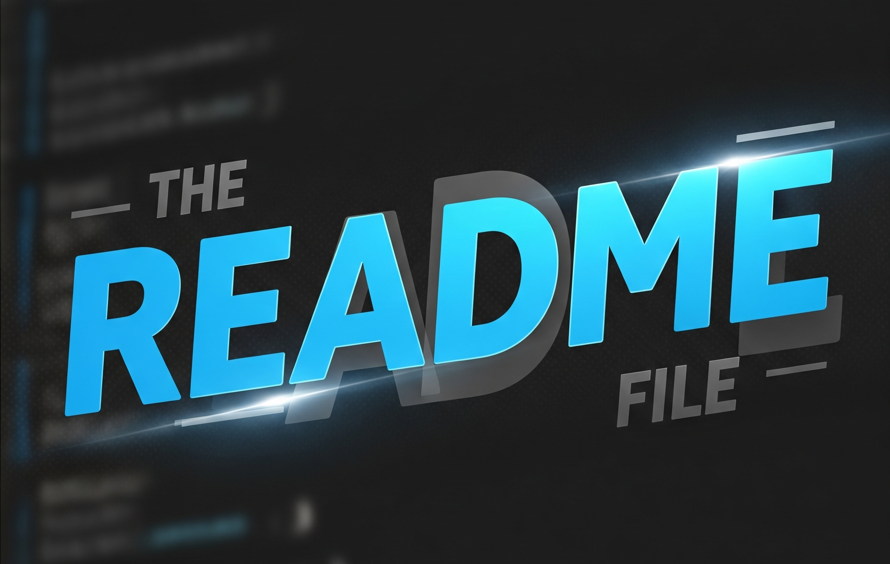
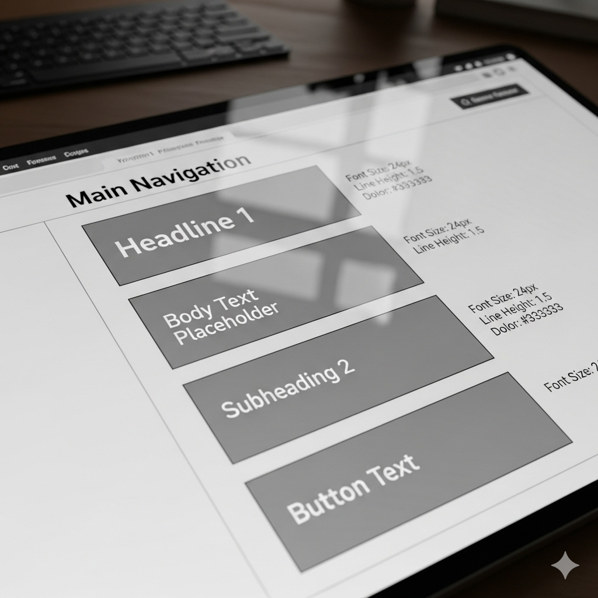
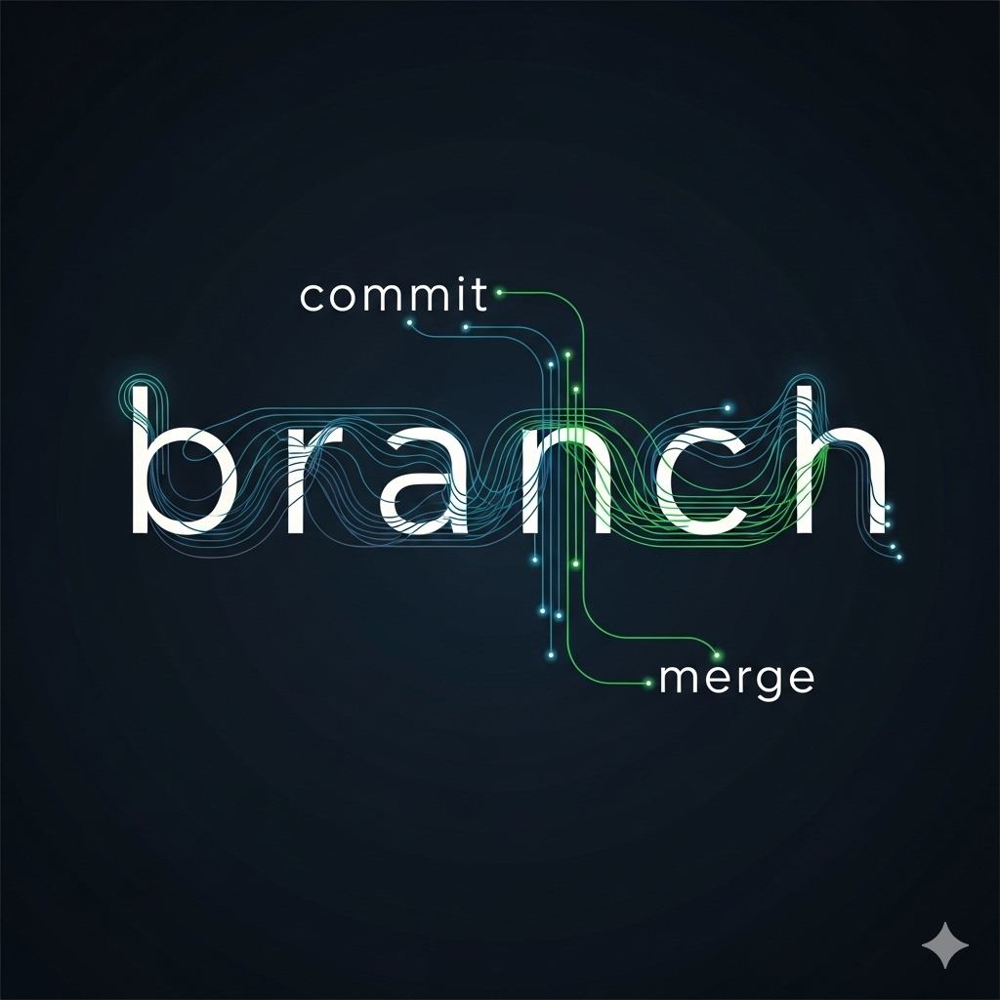

What is the purpose of a README file?
A README file provides an overview of a project, explaining what it does, how to install and use it, and who created it. It can also include guidelines for contributing, contact information, and links to additional resources. Essentially, it helps users and developers quickly understand and work with the project.
Read more

What is the purpose of a wireframe?
A wireframe is a visual blueprint of a website or app that shows the layout and structure of content and interface elements before design or development begins. Its purpose is to plan the placement of text, images, buttons, and navigation, ensuring a clear and logical user experience. Wireframes also serve as a communication tool for designers, developers, and stakeholders, helping them agree on the structure early and make changes easily, which saves time and resources in the design process.
Read more

What is a branch in Git?
A branch in Git is a separate line of development within a repository. It allows you to work on new features, bug fixes, or experiments without affecting the main codebase (usually called main or master). Each branch can have its own commits, so you can make changes safely and independently. Once the work on a branch is complete, it can be merged back into the main branch, incorporating the new changes.
In short, a branch is like a parallel workspace for development, helping teams organize work and collaborate efficiently.
Read more